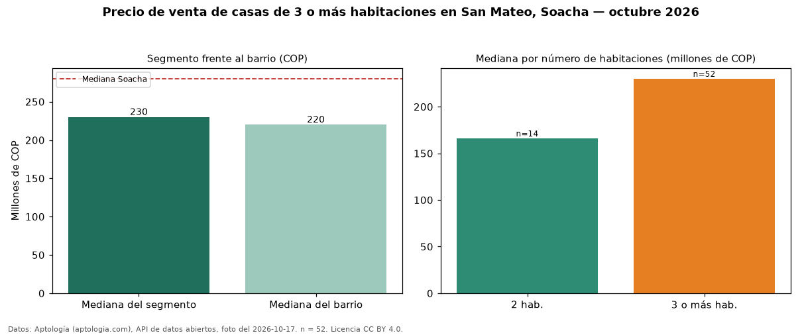

Precio de venta de casas de 3 o más habitaciones en San Mateo, Soacha — octubre 2026
En San Mateo, Soacha, la mediana de precio de venta de casas de 3 o más habitaciones es COP 230 millones, según 52 avisos vigentes. Eso la ubica 18 % por debajo de la mediana de Soacha para casas de 3 o más habitaciones (COP 280 millones). Son 79 % de los 66 avisos de casas en venta del barrio, cuya mediana general es COP 220 millones (+5 %). En el mismo barrio, la mediana es COP 166 millones con 2 habitaciones (n = 14). Datos: Aptología (aptologia.com), API de datos abiertos, licencia CC BY 4.0 — https://www.aptologia.com/casas-en-venta/soacha/san-mateo. Archivos: PDF de 2 páginas, CSV con las cifras y gráfica PNG.

| Avisos únicos | 52 |
|---|---|
| Percentil 25 | — |
| Mediana | COP 230.000.000 |
| Percentil 75 | — |
Fuente: avisos vigentes de portales inmobiliarios recopilados por Aptología, deduplicados (mínimo 30 avisos únicos por celda). Precios pedidos, no cerrados. Fecha: 2026-10-18.